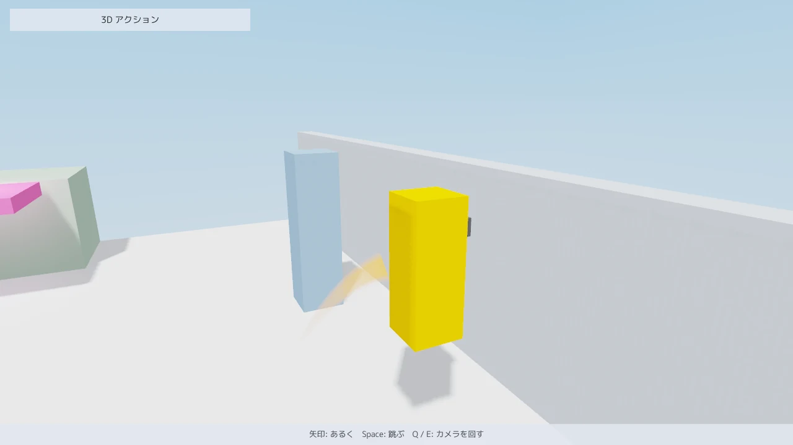
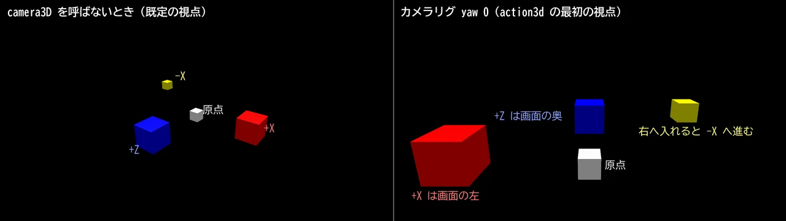

MitiruEngine
MitiruEngine
3D ACTION 1 / 6
地形を歩き、カメラで追う
同梱サンプルを動かしながら、小さな 3D アクションに要る部品を 6 ページで確かめます。1 ページ目は、地形の当たり判定、歩いて跳ぶキャラクター、壁をよけるカメラです。

action3d。キャラクターが跳んだところで、背中の後ろに光の筋が残っています。左の台の上にある桃色の板が、上下する足場です。始め方
自分のゲームとして始めるときは、CLI のテンプレート action3d を使います。箱の庭をキャラクターが歩き、敵が 1 体、見つけると追ってきます。このページの地形、キャラクター、カメラと、3 ページ目の敵の部品が 1 つのファイルに入っています。
mitiru new my_action -t action3d cd my_action mitiru run
矢印キーか WASD で歩き、Space で跳び、J で突き、Q と E でカメラを回します。mitiru の入れ方はインストールにあります。
各ページの同梱サンプル (action3d、anim3d など) は、エンジンのリポジトリに入っています。ソースを取ってビルドし、build\apps\mitiru_host で起動します。コマンドは、Visual Studio 2022 の x64 Native Tools Command Prompt のように cl と Ninja が通る端末で打ちます。
git clone https://github.com/mogmog-0110/MitiruEngine.git cd MitiruEngine cmake --preset default cmake --build build --target action3d cd build\apps\mitiru_host mitiru_host.exe action3d\action3d.dll
ほかのサンプルも、--target にサンプルの名前を書いてビルドし、同じ場所から起動します。サンプルの action3d は、矢印キーで歩き、Space で跳び、Q と E でカメラを回します。全文はサンプル集にあります。
部品はゲームの DLL の中で動く
当たり判定、キャラクター、カメラは mitiru::action にあるヘッダだけのライブラリで、ゲームの DLL が自分で取り込みます。エンジンに問い合わせを頼むと、答えは次のフレームに届きます。DLL の中で解けば、同じフレームのうちに答えが返ります。キャラクターは 1 回の更新で地形を何度も調べるので、1 フレームの遅れは着地や壁の判定の遅れとしてそのまま出ます。
状態は、数値だけでできた struct に置きます。キャラクターの位置、カメラの角度、先行入力の記録はどれもそのままコピーできる値なので、巻き戻し、録画、リプレイは何も書き足さずに使えます。
地形を作る
地形は三角形の集まりです。CollisionLevelBuilder に箱や三角形を足し、build() で 1 度だけ組み立てます。組み立てた地形は変わらないので、ゲームの状態には入れず DLL の static に置きます。DLL を読み込むたびに同じ表から同じ順で作るので、ホットリロードの後も当たり判定の答えは変わりません。
namespace act = mitiru::action;
struct Block { act::Vec3 lo, hi; std::uint32_t col; };
constexpr Block kBlocks[] = {
{{-8, -1, -8}, {8, 0, 8}, 0xC9D1DC}, // 床
{{-8, 0, -8}, {8, 3, -7.5f}, 0x8C9BB0}, // 奥の壁
// 階段、台、柱 ...
};
// 作ったら変えない地形。DLL を読み込むたびに作る
const act::CollisionLevel kLevel = [] {
act::CollisionLevelBuilder b;
for (const Block& k : kBlocks) { b.addBox(k.lo, k.hi, 0); }
return b.build();
}();
描くときも同じ kBlocks を drawMesh に渡します。見た目と当たり判定が同じ表から出るので、ずれることがありません。
問い合わせは毎フレーム CollisionWorld を作って行います。中身はポインタ 2 つなので、作る手間はかかりません。レイを飛ばす raycast、球やカプセルを動かしたときの最初の当たりを返す sphereCast と capsuleCast、触れている面を並べる overlapSphere と overlapCapsule があり、答えには当たった三角形の番号と layer (0〜31 の分類) が付きます。番号から面の種類の表を引けば、氷や溶岩の床を作れます。
Blender で作ったレベルを読む
サンプルの庭は箱の表から作っていますが、実際のステージは Blender で作れます。MitiruEngine はレベルエディタを持たず、Blender を代わりに使います。tools/blender/mitiru_level_export.py を Blender (4.2 以降) のアドオンとして入れると、3D ビューのサイドバーに Mitiru のタブが出ます。オブジェクトにカスタムプロパティ mitiru_type を付けて役割を決め、Ctrl+Alt+E で .glb に書き出します。
| spawn、enemy など | Empty に付けます。名前はゲームが決めます。位置、回転、拡大と、ほかのカスタムプロパティを持つ印になります。 |
| trigger | 立方体表示の Empty に付けます。箱の半分の大きさ (halfExtents) を持つ印になります。 |
| collision | メッシュに付けます。当たり判定だけに使う面で、描きません。 |
| navmesh | メッシュに付けます。敵の経路を探すナビメッシュの元だけに使う面で、描きません。 |
座標は Y が上、1 単位が 1 m です。同じ .glb を、見た目は drawModel が描き、印と当たり判定の面は mitiru::level::LevelFile が読みます。読んだ面は buildLevelCollision の 1 行で地形になり、Blender で置いた壁がそのまま当たり判定になります。同梱サンプル level3d は、この形で Blender のステージを歩きます。
#include <mitiru/action/CollisionLevelLoad.hpp>
#include <mitiru/level/LevelLoader.hpp>
// ファイルの中身だけで決まるので、ゲームの状態の外に置く
mitiru::level::LevelFile g_stage("mygame/assets/stage.glb");
act::CollisionLevel g_level = act::buildLevelCollision(g_stage.get());
void init()
{
// Blender で PlayerSpawn と名付けた Empty の位置から始める
if (const auto* spawn = g_stage.get().find("PlayerSpawn"))
{
hero.position = {spawn->position[0], spawn->position[1], spawn->position[2]};
}
}
void draw(Screen& s) const
{
s.drawModel("mygame/assets/stage.glb", {0.0f, 0.0f, 0.0f});
}
箱で組んだ地形と混ぜるときは、CollisionLevelBuilder に addLevelCollision(b, g_stage.get()) で足してから build() します。ゲームの状態に覚えておくのは印の番号か名前のハッシュ (nameHash) だけで、ポインタは入れません。
mitiru_host を --watch-assets <フォルダ> 付きで起動しておくと、Blender で .glb を書き出すたびに実行中のゲームがファイルを読み込みます。ゲームには asset.reloaded の知らせが届くので、その中身を reloadIf に渡します。読み込んだら地形も作り直します。
if (g_stage.reloadIf(in.actionPayload("asset.reloaded"))) // このファイルが書き換わったときだけ true
{
g_level = act::buildLevelCollision(g_stage.get());
}
キャラクターを歩かせる
キャラクターはカプセルの形で、stepCharacter が更新 1 回ぶん動かします。渡すのは、望む水平の速度と、跳ぶときの上向きの速さだけです。加速や慣性はゲームの側で決めます。入力の上下左右は、カメラから見た向きにしてから渡します。cameraRigForward がカメラの水平な前、cameraRigRight がその右を返します。
const Stick m = in.move(); // 矢印・WASD・スティックをまとめた入力 (y は下が正)
const act::Vec3 fwd = act::cameraRigForward(cam.yaw, 0.0f), right = act::cameraRigRight(fwd);
const act::Vec3 run = (right * m.x - fwd * m.y) * kRunSpeed;
const act::MovingBody bodies[] = {lift}; // 上下する足場
const act::CollisionWorld world(&kLevel, bodies);
act::stepCharacter(hero, kHero, world, {run, jump ? kJumpSpeed : 0.0f}, dt);
体の大きさと、どこまで歩けるかは CharacterConfig で決めます。サンプルは既定値のままです。
| radius / height | カプセルの太さと全長。既定は 0.35 m と 1.8 m です。 |
| maxSlopeDeg | これより急な面には立てず、壁として滑ります。既定は 45 度です。 |
| stepHeight | 上れる段差の高さ。段の縁で足元を上面に合わせるので、階段でも速さが落ちません。既定は 0.35 m です。 |
| snapDistance | 下り坂や段を降りるときに、地面へ吸い付ける距離。既定は 0.3 m です。 |
| gravity | 重力の向きと大きさ。逆向きが上になるので、+Y にすると天井を歩きます。既定は (0, -25, 0) です。 |
上下する足場は MovingBody で置きます。今の姿勢と、1 回前の更新での姿勢を持たせておくと、乗っているキャラクターは足場が動いたぶんだけ運ばれ、跳ぶと足場の速さを持ったまま離れます。
ジャンプを少し早めに受け付ける
着地の数フレーム前に押したジャンプを捨てると、押したのに跳ばなかったように感じられます。InputBuffer は押した瞬間を覚えておき、行動ごとに決めた猶予の間なら後から使えます。サンプルの猶予は 6 tick です。tick はゲームの更新 1 回のことで、1 秒に 60 回なので 6 tick は 0.1 秒になります。
constexpr act::ActionWindows kWindows{{6}}; // 行動 0 (跳ぶ) は 6 tick 前まで先に押せる
if (in.pressed(Key::Space)) { buffer.press(0, frame); }
const bool jump = hero.grounded != 0 && buffer.consume(0, frame, kWindows);
同じライブラリの tryCancel は、技の取り消しの窓が開いているときだけ、優先順に先行入力を使います。攻撃からの回避のように、技をつなぐ入力に使います。
壁をよけるカメラ
updateCameraRig は、キャラクターの後ろへ腕を伸ばした先にカメラを置きます。腕の先の球を地形に向けて動かし、壁に当たればその場で腕を縮めるので、カメラが壁の中に入りません。壁が無くなっても recoverDelay 秒 (既定 0.25 秒) 待ってから伸ばすため、柱の横を通るたびにカメラが前後に揺れることもありません。
act::CameraRigInput ci; ci.follow = hero.position; // 追う足元 ci.orbitX = in.rightStick().x; // 右スティックで回す ci.orbitY = in.rightStick().y; view = act::updateCameraRig(cam, kCam, ci, world, dt); // draw では、返ってきた視点をそのまま渡す。近い面は 0.1 m、遠い面は 80 m s.camera3D(view.eye, view.target, view.up, view.fovDeg, 0.1f, 80.0f);
敵に視点を合わせるときは、ci.lockOn = 1 にして ci.lockTarget に相手の位置を入れます。注視点が自分と相手の間へ移り、2 人が画面に収まる長さまで腕が伸びます。腕の長さ、画角、追いつく速さは CameraRigConfig で変えられます。
ロックオンしていないときに、振った剣を近くの敵へ向けるのがソフトロックです。softLock (<mitiru/action/SoftLock.hpp>) は、前の円錐と射程の中から、近くて正面に近い相手を 1 体選び、そちらへ向き直った前と yaw を返します。相手を覚えないので、振るたびに選び直します。点数が同じなら配列の前の方を選ぶので、リプレイでも同じ相手を狙います。
act::SoftLockParams lock;
lock.range = 4.0f; // 4 m まで
lock.halfAngleDeg = 70.0f; // 前の左右 70 度まで
lock.maxTurnDeg = 45.0f; // 1 回で向き直るのは 45 度まで
if (in.pressed(Key::J))
{
const act::Vec3 front{std::sin(facingYaw), 0.0f, std::cos(facingYaw)}; // facingYaw はゲームが持つ向き
const act::SoftLockResult r = act::softLock(hero.position, front, enemyPositions, enemyCount, lock);
facingYaw = r.yaw; // 誰もいなければ今の向きのまま (r.target は -1)
}
画面の左右と座標の向き
座標は右手系で、Y が上、1 単位が 1 m です。カメラリグは yaw が 0 のとき +Z の向きを見るので、+X は画面の左に、-X は右に出ます。キャラクターを画面の右へ動かす向きは、cameraRigRight が返す -X です。

cameraRigRight の向きへ 2 m の位置にあります。左は camera3D を呼ばないときの既定の視点 (目 (6, 5, 8)、注視点 (0, 0.5, 0))、右はカメラリグの yaw 0 です。攻撃の当たりを「+X が右」と決めて書くと、yaw 0 のカメラでは左右が逆になります。前方の扇形の判定のように向きが要るときは、座標軸ではなく、カメラの前と右から組んだ移動の向きを使います。テンプレートの action3d は、その向きを facing に覚えています。
使った部品の一覧は mitiru::action の API リファレンスにあります。次のページでは、箱のキャラクターを骨の入ったモデルに替えます。2. キャラクターに動きを付ける